Background (Why the Customer Portal is *chef’s kiss*)
When I joined Cisco during Summer 2019, the Cisco Customer Experience Team was working on the Customer Portal (CP), an application that consolidates and organizes Cisco product resources for clients. In the past, clients have struggled in using Cisco’s antiquated search function to troubleshoot problems, and opening a support case to get questions answered can be costly and inefficient. The CP provides a step-by-step repository of resources (i.e. PDFs, webinars, license training, etc.) for all of Cisco’s products. Its largest value prop is that it allows clients to proactively prevent problems instead of retroactively scrambling to fix them.
How troubleshooting used to look for Cisco clients
Research
I, along with members of the CX team, flew down to San Diego to attend the Cisco Live! conference and conducted user research with Cisco clients. Our main target audience was network engineers, who benefit the most from the CP and use the CP directly. To start off our research, I co-wrote high-level questions and then based the rest of the interview guide off of them. Here are the three main insights that would influence my design decisions.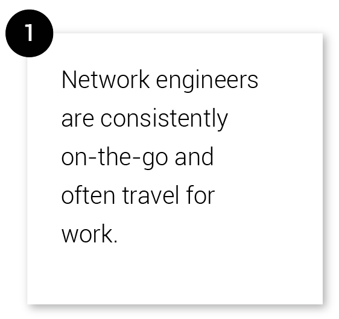
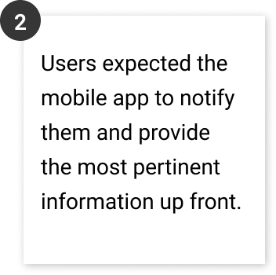

With the insights from our research coupled with our given task, I devised this problem statement to focus our solutions.
How might we expand our current web platform to mobile so we can improve network engineers' accessibility to the CP?
Planning
Part of my process to answering such vague questions is to brain-dump onto a piece of paper. I needed to restructure this vast CRM tool into a compact mobile app, so I first set out to lay out the barebones of the CP. I wrote out all the possible user flows and translated the navigation to be adapted to mobile. I also began some preliminary drawings for translating the web interactions into mobile interactions. 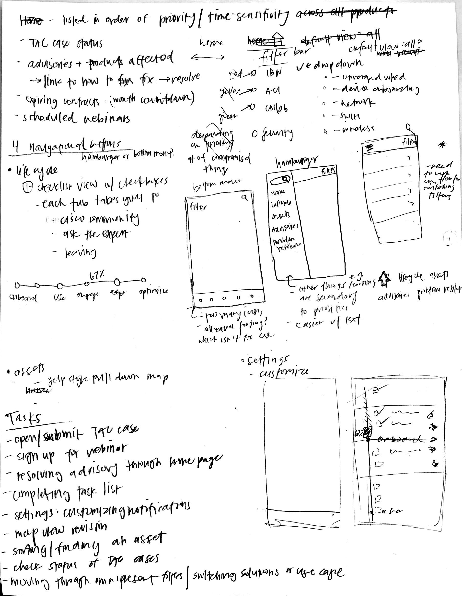
Don't worry - I can't read it either
There were a number of possible flows to explore. Instead of making all the screens possible, we divided our work up by
features (I took Home Page and Lifecycle) and each crafted a user story that incorporated our research insights and
communicated the value our designs brought to the user.
Building a simple and omnipresent navigation and making search functions through it.
Navigation allows the user to jump through multiple pages easily. I placed the search within the hamburger menu, so users can search universally instead of within each page. Next to the search button, the AR functionality follows the same principle of being available at the click of a button.
Creating a simple experience for browsing and scheduling resources.
In order to have access to more relevant resources, I designed a “Suggested Resources” section underneath a video so users can further engage with more information and cascade through each page. Because Ned relies on watching the videos on his phone, I also built in a pop-up menu that allows him more interactions, such as, choosing a session for a webinar.

Collecting and consolidating highlights across all sections of the CP
Using the second main insight from the research, I came up with a couple of ideas for how the home screen would look. Users expected a mobile app to be a simplified version of the web portal and wanted to have the most important information up front.

After the evolution of ideas, Idea (3) seemed to be the most effective for satsifying our users’ needs. Idea (3) was further iterated upon and developed after I left my summer internship.
If I could continue on this project, I would want to create a user testing guide to see if the designs accomplished the goal of making resources more accessible. I would measure its success by high click-through rates and time spent on each page.
Our reasoning from the research initially led us to believe that mobile notifications were the most important feature that the mobile CP could provide. One of our stakeholders pointed out that users could simply get an email about any important updates. I realized that just because users expected notifications, it didn’t mean that notifications would definitely bring any value to the user. Thus, I reevaluated our research and focused on the use case that highlighted the portability and convenience of a mobile app.
Another designer asked us if the CP could simply be opened in a web browser rather than a mobile app. My answer to that is that a mobile app allows for a better UI, especially because the web CP has so much information. A web browser has limited functionalities that would not allow for future AR and WebEx integrations and filtered home page.
User Story
This story is based off the problem statement above and showcases the different facets of accessibility I wanted to provide for the user: physically and within the app.
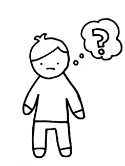
(1) Ned is a network engineer whose company has acquired a new site, and he is responsible for setting up its network. He wants to do a thorough job and knows that the CP will allow him to take preventative measures and maintain a healthy network. So begins his user journey with the CP.
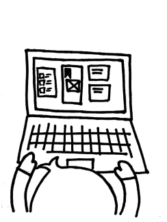
(2) The first thing he does is schedule a webinar from his laptop while at work to learn about setting up his product. Ned’s days are filled with meetings and collaboration, so he wants to take his learning outside the workplace.
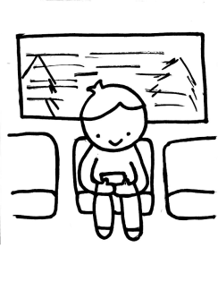
(3) The scheduled webinar shows up in the app's home screen and from there, he watches the webinar on the commute to-and-from work, thanks to the portability of his mobile phone.
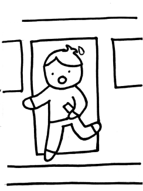
(4) Ned thankfully gets off at the right stop - he’s admittedly missed it a couple times.
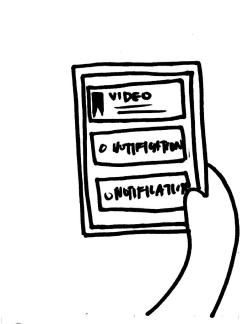
(5) The next day, Ned goes to the network site to set up his product and pulls out his phone to review the video.
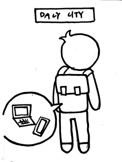
(6) He uses his computer to pull up the command line interface but cannot access the instructions through his computer.
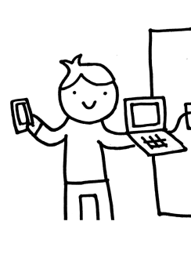
(7) He pulls out his phone and walks through the mobile app again to the Lifecycle page, where he finds the relevant PDF for setting up his product, as demo'd below.
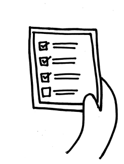
(8) Ned successfully uses his phone and computer in parallel to efficiently and correctly set up his network hardware. He checks off his in-app to-do list. Good job, Ned.
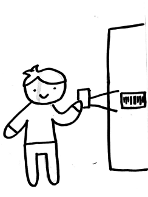
(9, 10) I added on a AR functionality to the story that makes finding documentation for a product easier by scanning a barcode. This is a potential future AR project for Cisco.
Solution #1
Building a simple and omnipresent navigation and making search functions through it.
Navigation allows the user to jump through multiple pages easily. I placed the search within the hamburger menu, so users can search universally instead of within each page. Next to the search button, the AR functionality follows the same principle of being available at the click of a button.
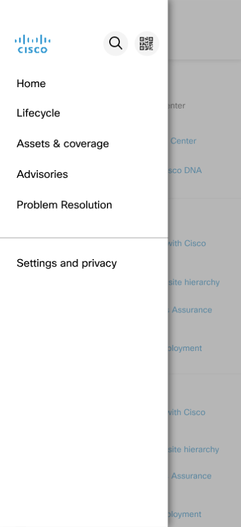
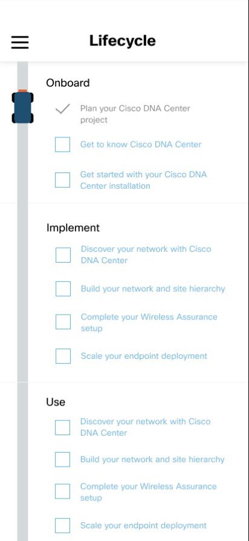
Solution #2
Creating a simple experience for browsing and scheduling resources.
In order to have access to more relevant resources, I designed a “Suggested Resources” section underneath a video so users can further engage with more information and cascade through each page. Because Ned relies on watching the videos on his phone, I also built in a pop-up menu that allows him more interactions, such as, choosing a session for a webinar.
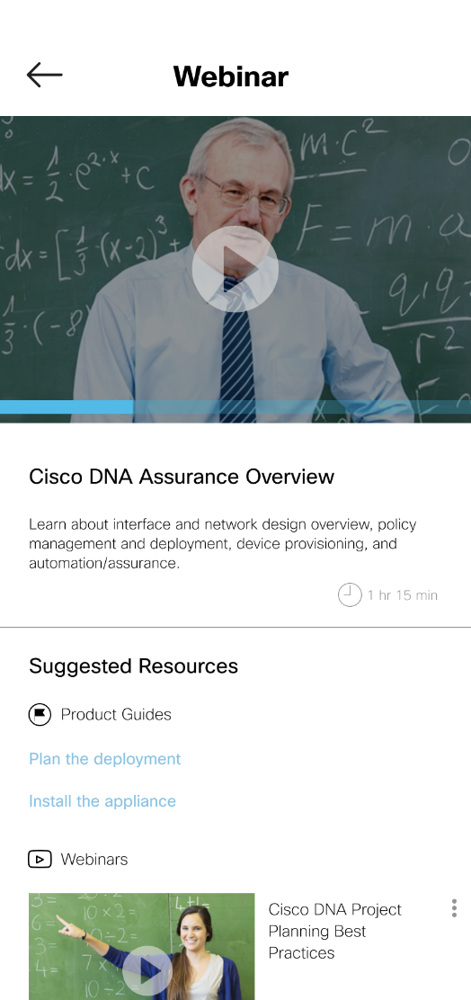
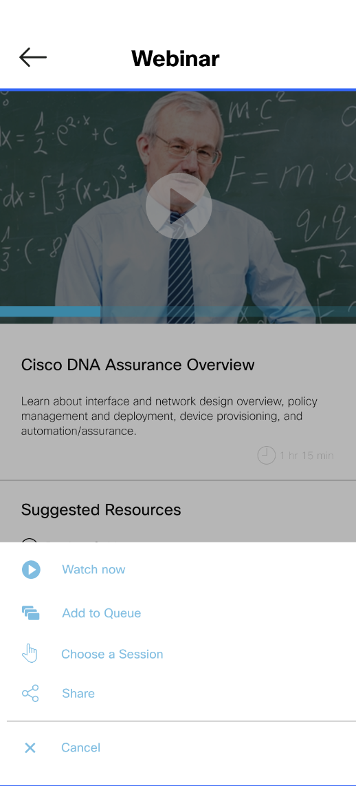
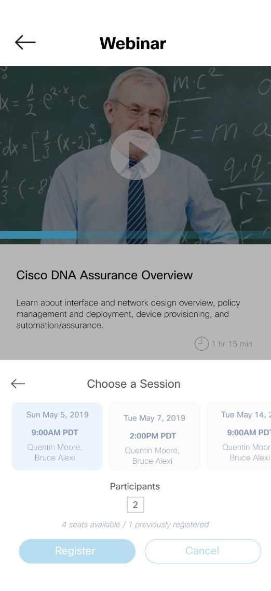
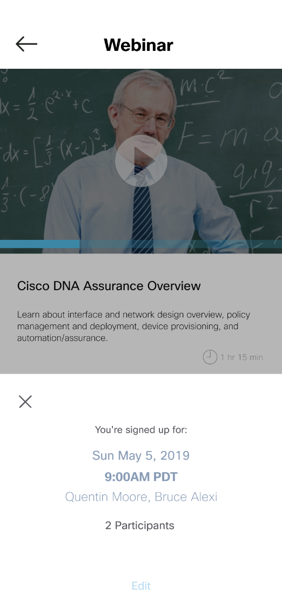
Solution #3
Collecting and consolidating highlights across all sections of the CP
Using the second main insight from the research, I came up with a couple of ideas for how the home screen would look. Users expected a mobile app to be a simplified version of the web portal and wanted to have the most important information up front.
Idea (1)
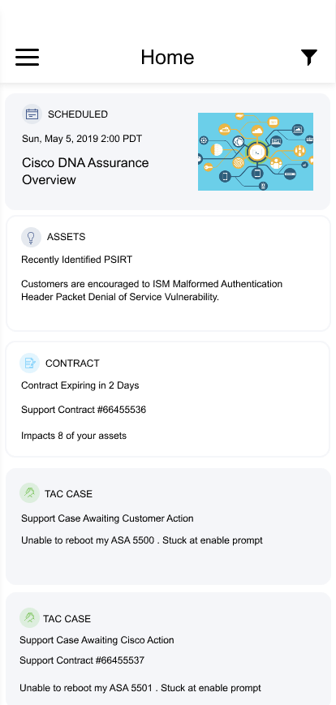
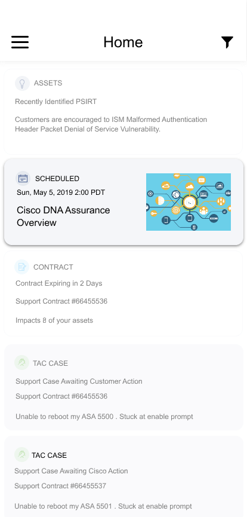
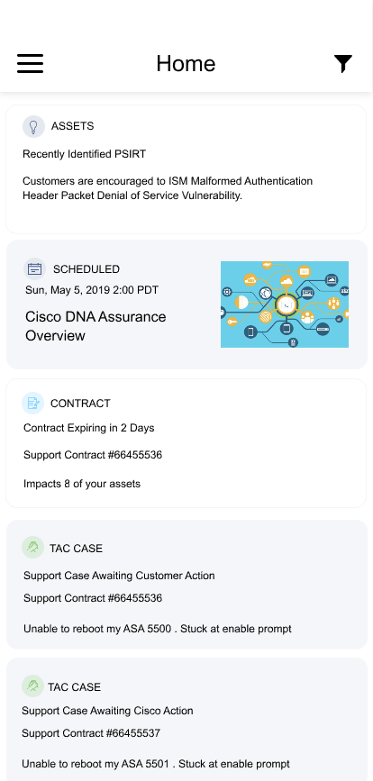
- Allows for prioritization
- Not scalable
- Hold-and-drag is not intuitive
Idea (2)
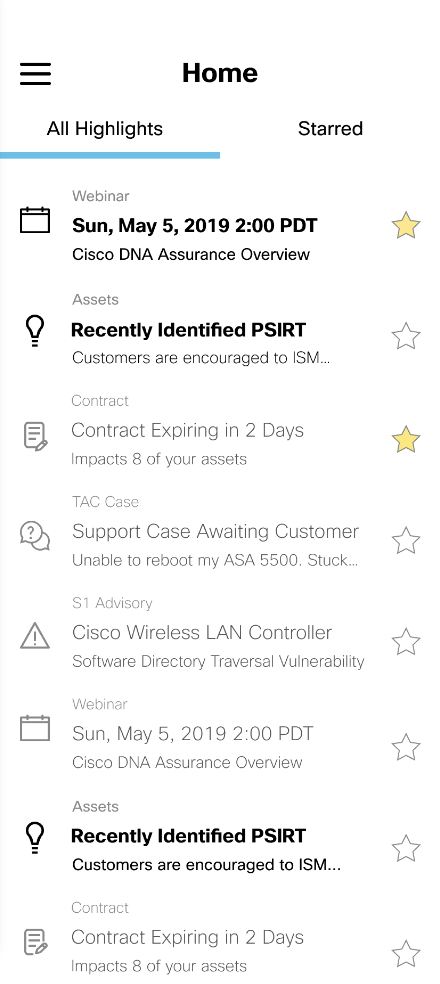
- Allows for prioritization
- More information fits on the screen
- Lot of text to visually parse through
Idea (3)
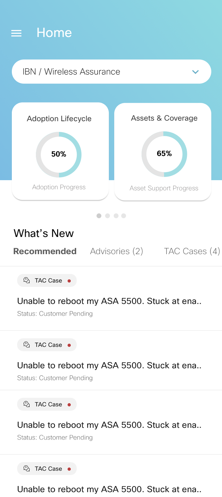
- Appealing data visualizations break up heavy text
- More filtering
- Closest to web CP's design
- Shows less highlights
After the evolution of ideas, Idea (3) seemed to be the most effective for satsifying our users’ needs. Idea (3) was further iterated upon and developed after I left my summer internship.
Possible Next Steps
If I could continue on this project, I would want to create a user testing guide to see if the designs accomplished the goal of making resources more accessible. I would measure its success by high click-through rates and time spent on each page.
Extra, Extra Notes
Our reasoning from the research initially led us to believe that mobile notifications were the most important feature that the mobile CP could provide. One of our stakeholders pointed out that users could simply get an email about any important updates. I realized that just because users expected notifications, it didn’t mean that notifications would definitely bring any value to the user. Thus, I reevaluated our research and focused on the use case that highlighted the portability and convenience of a mobile app.
Another designer asked us if the CP could simply be opened in a web browser rather than a mobile app. My answer to that is that a mobile app allows for a better UI, especially because the web CP has so much information. A web browser has limited functionalities that would not allow for future AR and WebEx integrations and filtered home page.